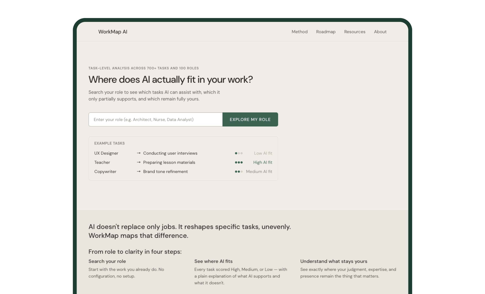
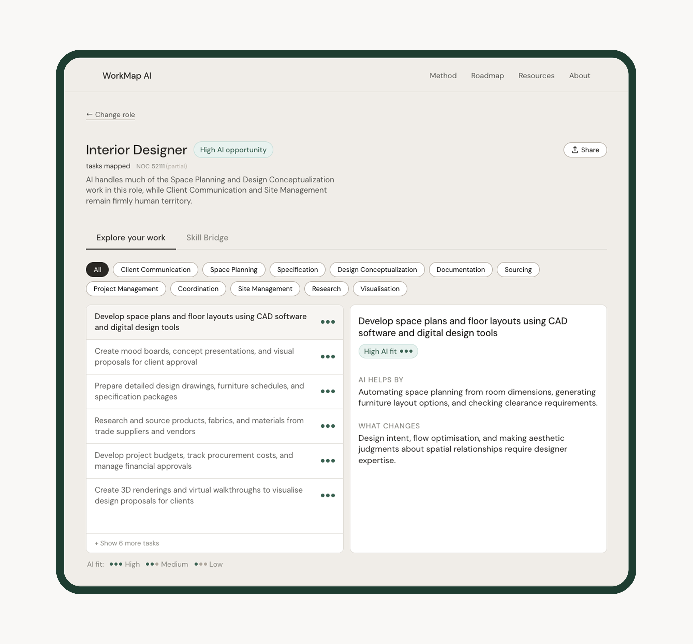
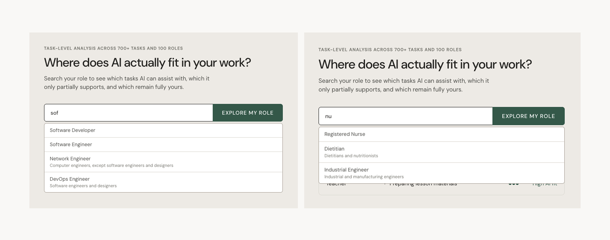
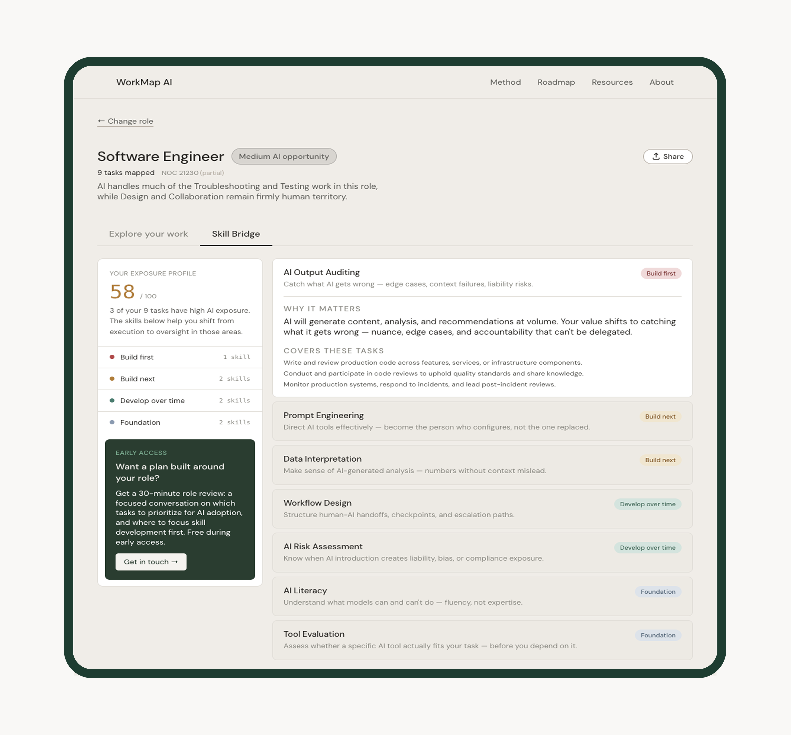
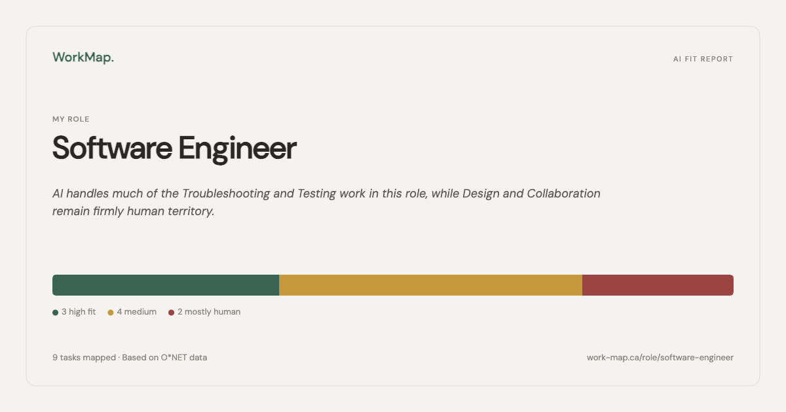

Most AI coverage lands somewhere between vague and alarming. WorkMap is the alternative: a role-based tool that shows professionals exactly where AI intersects with their work, task by task, with honest scores and plain-language explanations. Not automation risk. A concrete map of what changes and what doesn't.

The person WorkMap is built for isn't a skeptic and isn't an early adopter. They're experienced, competent, and have been told by their organisation to get familiar with AI. They've been given no direction on what that means for the specific tasks they do on a Tuesday afternoon.
The information available to them operates at the wrong altitude. Sector-level projections, occupation automation percentages, tool comparisons — none of it maps to what they actually do. There was no tool that started with a job title and walked through the work itself.
Design challenge: How might we make AI's impact on specific roles legible at the task level, without overstating what the data supports?
Two people with the same job title can have very different AI exposure depending on which tasks dominate their day. The job title hides that. The task list surfaces it.
This also forced a harder design constraint: scores had to be calibrated honestly. A safety-critical, physically present role shouldn't score the same as a document-heavy administrative one just because both have "data" in the description. The tool had to reflect that, or it wouldn't be worth using.

The goal was never to produce a number. It was to give someone enough structure to understand their situation — and then decide what to do about it. That meant three things had to be true at once: the data had to come from a credible occupational source, the scores had to be calibrated to role type rather than applied uniformly, and the interface had to surface the reasoning behind each score, not just the label.
I designed and built WorkMap end-to-end: data architecture, scoring model, component system, and deployment. The product is live, organically growing, and in active development.

WorkMap is built on O*NET occupational data — the US Department of Labor's structured task database. Each task is scored High, Medium, or Low AI fit, with plain-language fields for what AI helps with and what changes for the human. Three JSON files power the product at runtime: roles.json, tasks.json, and ai_scores.json.
| Layer | Decision | Why it matters |
|---|---|---|
| Data fetching | Runtime fetch via useData.js, never imported as ES modules |
Prevents Vite from bundling large JSON at build time, fixing Vercel blank screen errors |
| Navigation | Single activePage state string in App.jsx — no router library |
Three views, simple string state, no unnecessary dependency |
| Role logic | Custom useRole hook accepts data as parameters, never imports directly |
Keeps components focused on rendering; hook stays testable and reusable |
| NOC alias layer | noc_aliases.json maps Statistics Canada NOC 2021 to O*NET equivalents |
Canadian differentiator: users search by NOC title or code, not just US role names |
| Share Card | 1200×630px PNG generated entirely via the native Canvas API | No html2canvas, no external dependencies; Web Share API confirmed on macOS |
| Cache busting | ?v=${Date.now()} parameter on every fetch |
Prevents stale data on Vercel's CDN edge after redeployment |

WorkMap does not say "your job is X% at risk." It shows fit levels per task and lets the user interpret their own picture. High AI fit on a task means AI can help with it — not that the task, or the person doing it, is being replaced. This was a deliberate refusal of the framing that dominates AI coverage. The tool's job is legibility, not alarm.
Safety-critical and physically present roles — Anesthesiologist, Commercial Pilot, Rigger — are scored conservatively. Data-heavy and document-heavy roles — Accountant, Paralegal, Proposal Coordinator — are scored high where the evidence supports it. A uniform rubric would have produced scores that felt implausible to anyone who actually knew the work.
No decorative elements, no illustration, no animation for its own sake. Warm slate palette, green accent, DM Sans throughout. Every visual decision is testable against the product thesis: does this make the data clearer, or does it make the interface feel more polished at the expense of clarity?
When the top tier yields zero matches for a given role, tier labels are reassigned sequentially at render time — without mutating skill-bridge.json. The source data stays clean; the UI always shows a meaningful first tier. A single filteredTiers variable drives both the sidebar counts and the card display, so the numbers are always in sync.

A tool that gives professionals a concrete, role-specific picture of their AI exposure — built, shipped, and growing.
The dataset covers 100 roles and 657+ fully scored tasks. The product is live on Vercel, deployed from a GitHub-connected repo with auto-deployment on push. Organic distribution has come primarily through LinkedIn, where the build process has been documented publicly in a consistent posting format since the project launched.
The NOC integration created a meaningful regional differentiator for the .ca deployment. The Share Card feature added a low-friction distribution mechanism tied directly to the product's core output.
WorkMap was developed using Claude Code for implementation, alongside architectural and strategic decisions made independently. That process surfaced what the product is trying to articulate: the useful question isn't "what can AI do?" It's "what does AI do to this specific task, for this specific person, in this specific context?"
Running both sides of the question at once — designing a tool that makes AI legible while using AI to build it — created a productive tension. Every time a design decision felt opaque or arbitrary, there was a working example of what opacity costs the person trying to make sense of a system they didn't build. That experience sharpened what WorkMap needed to be.
Validate the scoring rubric publicly before expanding the dataset. The calibration decisions that make WorkMap honest are also the ones hardest to defend without a published rubric. Expanding to more roles before that's documented creates a credibility risk. The methodology page exists; making the rubric explicit and version-controlled would close the gap.
Test the Skill Bridge with users who are actively in transition. The current skill matching is keyword-based against task descriptions. It works as a first pass. But the users who would get the most value from it — people actively considering a role change or reskilling — are also the users most likely to notice where the matches feel generic. A round of structured interviews with that group before shipping role-aware skill matching would sharpen what to fix first.
The people using WorkMap didn't design the AI tools being introduced into their workplaces. They're encountering them as decisions made upstream, handed down without much explanation. The tool's job is to give them enough structure to form their own view — not to form it for them.
That constraint shaped every design decision. It's also the one I'd carry into the next project.
"The useful question isn't 'what can AI do?' It's what does AI do to this specific task, for this specific person, in this specific context?"